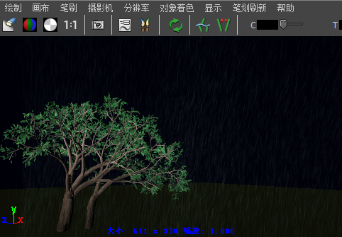
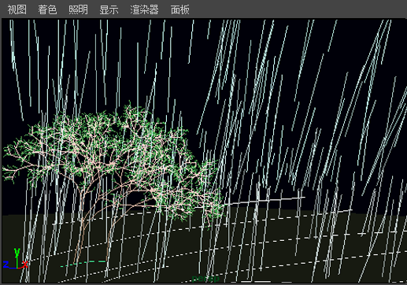

使用“水”(Water)预设笔刷，您可以快速为场景中的雨雪设置动画。这些笔刷具有流动画设置。

为雨设置动画
- 将灯光添加到场景。
- 在“内容浏览器”(Content Browser)中，选择雨预设笔刷（位于“天气”(Weather)文件夹中）。
- 在透视视图的栅格平面上绘制笔划。沿相同方向绘制各个笔划，以便从同一方向降雨。

- 在场景视图中单击“向前播放”(Play Forward)按钮，以检查动画是否正按照您要求的方式进行运作。
- 渲染动画。请参见使用“Paint Effects”笔划渲染场景。